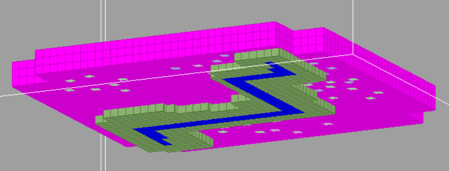
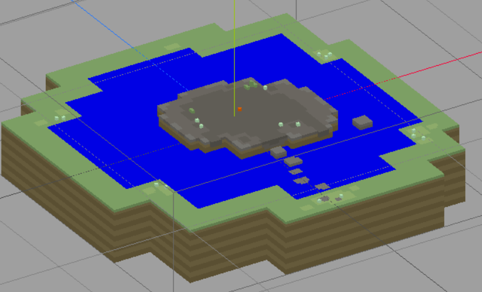
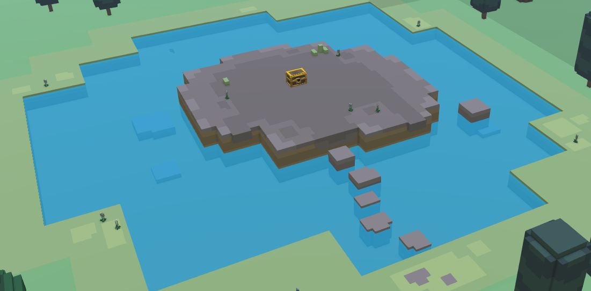

Landmarks are a special type of scenario that allows us to add terrain features to the map via QB files. They are created using functions from the stonehearth/lib/landmark_lib.lua file.
You can find a couple livestreams about landmarks here and here.
Let's copy one and see how they work.
Copy
stonehearth/scenarios/static/landmarks/128x_sacred_stone.jsonto your mod and rename it.Open the JSON file for the landmark and modify it:
{ "mixins": "stonehearth/scenarios/static/landmarks/qb_to_terrain.json", "biomes": ["stonehearth:biome:temperate","stonehearth:biome:arctic","stonehearth:biome:desert"], "name": "custom_landmark", "category": "terrain_feature_common", "unique" : false, "size": { "width": 128, "length": 128 }, "habitat_types": ["plains", "forest"], "overwrite_occupied_size": 5, "weight" : 0.33, "data": { "brush" : "/my_mod/data/models/landmark/128x_custom_landmark.qb", "landmark_block_types": "stonehearth:landmark_blocks" } }The fields we edited are:
"mixins" -- make sure that it points to the scenario file from the stonehearth mod.
"biomes" -- here we can restrict it to appear in certain biomes. If this field is omitted, it will spawn in any biome, even modded ones.
"name" -- give a unique name for our landmark.
"category" -- here we use one of the categories for the landmarks that are listed in scenario_index.json.
"unique" -- we allowed this landmark to spawn more than once per map.
"size" -- the size in blocks that this scenario will take when calculating its spawn location.
"habitat_types" -- the habitats where this scenario can spawn. Possible values are "plains", "forest", "foothills", "mountains" and "water".
"overwrite_occupied_size" -- our landmark will search within its "size" for block groups of up to this value to occupied size to overwrite. So a tree that has a 2x2 voxel base (4 voxels) would require a "overwrite_occupied_size" of 5 or more for a landmark to be placed on top. Don't go too high with this value though (after about 6 or so it's basically placing on top of everything).
"weight" -- a weight for calculating the chances to spawn together with the other existing landmarks.
"data" -- here we specify the "brush" (which is the QB model) and the "landmark_block_types" which by default will be "stonehearth:landmark_blocks". Optionally we can also specify a mask like this:
"data": { "brush" : "/stonehearth/data/models/landmark/128x_skeleton_caribou_arctic.qb", "brush_mask" : "/stonehearth/data/models/landmark/128x_skeleton_caribou_arctic_mask.qb", "landmark_block_types": "stonehearth:landmark_blocks" }
The mask is a similar model, but with other colors from the possible landmark blocks. These colors represent what will drop from the landmark when we mine those blocks, no matter the color they have in the original model. In the example above, mining the skeleton of the caribou will drop bones, no matter if we mine its body or its horns (which have different colors each).
Edit the QB model and export it. If it's too big, your voxel editor might be laggy or hang, be careful with that.
We can use any color for the model of our landmark. But we need to take into account the landmark blocks defined in
stonehearth/data/terrain/landmark_blocks.json:"drop_chance_default": 0.04, "color_water": "#0000FF", "color_water_lowered": "#0001FF", "color_mimic_tag": "#FFFF00", "#FF00FF": { "terrain_tag": "null" }, "#25221A": { "terrain_tag": "unknown" }, "#514E45": { "terrain_tag": "bedrock" }, "#7575FF": { "loot_bag": "stonehearth:manipulation:wet_stone", "facing": "random", "force_iconic": false, "fill_voxel_with_water": true }, ...We have different keys defined here. For the keys that represent hexadecimal colors we can:
- Define a matching terrain tag (from terrain_blocks.json). When the landmark is loaded in the game, that voxel in the QB model will be replaced by 1 block of the terrain defined here.
- Define an item to replace that block inside the game. Mind that some items occupy more than 1 block in the game. There are different properties we can use here:
- "loot_bag" -- this is the URI of the item.
- "facing" -- this is either "random" or a number representing a straight angle (0, 90, 180, 270).
- "force_iconic" -- normally it will be false since we want to spawn the root form of the entity, but sometimes we might want it to be true.
- "fill_voxel_with_water" -- this is only used for the wet stones.
- "fill_voxel_with_low_water" -- this is only used for the dry stones.
- "drop_chance" -- by default it will be 0.04 as defined above if we don't include it. This is the chance that the URI or resources will drop when the block is mined.
- "placement_chance" -- a chance of placement for this item, so that sometimes nothing will be placed in this block. It is optional.
- "owner" -- we can optionally define the owner for the items. For example, the landmark with the old farms has wheat piles with "owner" : "" which allows the player to loot them. The cemetery has their entities with "owner" : "undead" so they will be hostile and our combat units will automatically attack them.
If we use the "color_mimic_tag" color for our voxels, they will be colored as the terrain they spawn on (the color will be taken from the single block at the center location where the landmark spawns).
The colors for the different terrain tags will also adapt to the biome they're on. For example, the color #82807B, which is mapped to rock_layer_3, will appear as gray in the temperate biome, but as pink in the desert biome, because that is the color of the third rock layer in that biome.
The "color_water" is used to fill water up to the top of the voxel - good for waterfalls where you want water to be flowing out of the instant the landmark is spawned. "color_water_lowered" is used for water basins where there are dry stones (or where you just dont want the water to fill the area it is in up to the brim).
In general, if water is going to pour out of a basin, you want to use the "color_water". If water is going to end in a basin, use "color_water_lowered". All the colors hexadecimal value must be in uppercase, otherwise they won't adapt to the biomes.
All the colors hexadecimal value must be in uppercase, otherwise they won't adapt to the biomes.Using colors not defined in
landmark_blocks.jsonwill make them appear the same color no matter the biome where the landmark is spawned. If we add some new block types toterrain_blocks.jsonand / or tolandmark_blocks.json, we can also use them in landmarks.There are many landmarks that spawn underground and players can't see them unless they mine. We can create underground caves by using the color for the "null" tag, it will remove blocks from the terrain it intersects with. But they should be as short as possible, otherwise if the player places their banner on top of a cave, the starting hearthlings might spawn inside of it, which is confusing.
This is the model for one of the existing cave landmarks, seen from below:  All the pink will be removed from the terrain when this landmark spawns (this scenario has a category of "terrain_feature_underground"). As you can see, it's only 3 blocks tall.
For our example we used colors to spawn some plants and a loot chest: 
Add a mixinto to the scenario index in your manifest:
"mixintos" : { "stonehearth:scenarios:scenario_index" : "file(scenarios/scenario_index.json)" }Our mixinto looks like this:
{ "static" : { "scenarios" : [ "file(custom_landmark)" ] } }Test that the landmark spawns in the biomes we defined. You might need to tweak the values to have a higher chance to spawn, or even change the habitats, since there are many landmarks to choose from and it can take many attempts to get it to appear. 